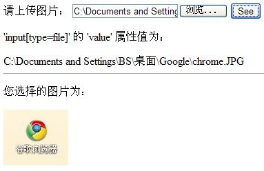
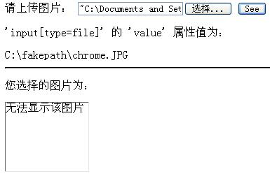
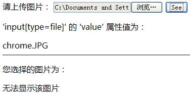
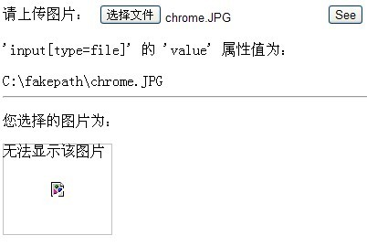
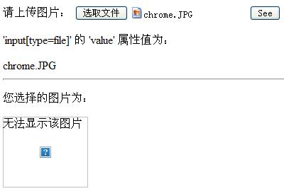

当一个 INPUT 元素的 'type' 属性值设置为 'file' 时创建了一个文件选择控件(file select)，其中 INPUT 元素的 'value' 属性值便是文件的初始名称。
另外，在 IE6 和 IE7 下通过此方法实现的文件选择控件的输入框是可以手动输入的，但若在此路径下不存在此文件则会显示错误信息，而在 IE8 和其他浏览器中是禁止手动输入的。
关于 INPUT[type=file] 的详细信息，请参考 HTML4.0 规范 17.4.1 Control types created with INPUT中的内容。
在通过设置 INPUT 元素的 'type' 属性值为 'file' 来实现一个文件选择控件时，按照规范的描述此 INPUT 的 'value' 属性值应为被选择的文件名称，而不应该包含文件路径或其他字符，然而在各浏览器中 INPUT 元素的 'value' 属性值不尽相同，在 IE 和 Opera 中与规范的描述不符。
由于 'INPUT[type=file]' 的 'value' 属性值在各浏览器中存在差异，这使得例如要实现一个在客户端上传图片时当用户选择图片后要在特定位置重现该图片以便用户确认此图片的过程中如果用 JavaScript 脚本去获得 INPUT 元素的 'value' 属性值并将其赋给一个 'img' 元素的 'src' 属性时在除 IE 以外的浏览器中无法达到预期效果。
| 所有浏览器 |
|---|
测试代码如下：
<body> <span>请上传图片：</span> <input type="file" id="upload"> <input
type="button" value="See" id="see" onclick="getseee()"> <div id="path" style="display:none" >
<p>'input[type=file]' 的 'value' 属性值为：</p> <div id="info"></div> </div>
<hr> <div id="image" style="display:none" > <p>您选择的图片为：</p> <img
alt="无法显示该图片" id="pic" style="height:100px; width:120px;"/> </div>
</body><script> function getseee() { document.getElementById("pic").src =
document.getElementById("upload").value; document.getElementById("info").innerHTML=
document.getElementById("upload").value; document.getElementById("path").style.display="";
document.getElementById("image").style.display=""; } </script>
以上代码的目的是通过 JavaScript 脚本实现获取被上传图片的路径并将其在客户端显示，但只有在 IE 中达到了预期效果。
在各浏览器中的截图如下：
| IE6 IE7 IE8 |
|---|
|  |
| Opera1 |
|---|
|  |
| FireFox |
|---|
|  |
| Chrome |
|---|
|  |
| Safari |
|---|
|  |
【注】：IE9 Beta 版在默认安全设置下与 Opera 浏览器处理一致。
从截图可以看出运行结果可分为三类：
综上所述，这个问题的根本成因为——各个浏览器对用户选择的本地文件信任程度不同，只有 IE6 IE7 IE8 浏览器在默认安全设置下信任用户选择的本地文件。
如果要实现类似上例中的客户端图片浏览功能建议读者查找 actionScript 3 相关资料来完成或先将图片存储到服务器端再显示到客户端。
| 操作系统版本: | Windows 7 Ultimate build 7600 |
|---|---|
| 浏览器版本: |
IE6
IE7 IE8 Firefox 3.6.10 Chrome 7.0.517.8 dev Safari 5.0.2 Opera 10.62 |
| 测试页面: | input_file.html |
| 本文更新时间: | 2010-09-06 |
input file upload